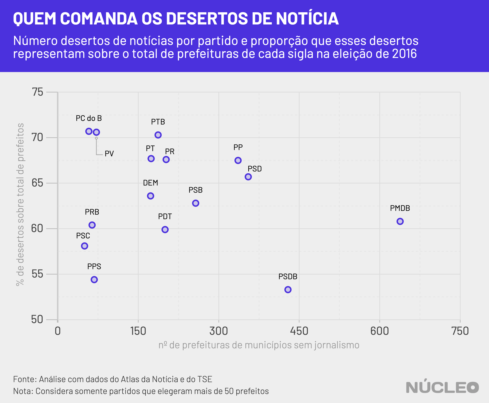

No Brasil, 62,5% dos municípios são “desertos de notícias”, ou seja, lugares que não possuem veículos de jornalismo. Em qualquer ano, isso significa ausência de reportagens sobre serviços de saúde e transporte, de segurança pública, do cotidiano da cidade e, principalmente, de transparência de autoridades. Em ano de eleições, essa carência é particularmente problemática.
Análise inédita do Núcleo com dados do Atlas da Notícia, projeto que mapeia o jornalismo local no Brasil, mostra quais são os partidos que controlam as prefeituras dos quase 3.500 municípios (cerca de dois terços do Brasil) que não possuem nenhum veículo para cobrir o que acontece no nível local.
É importante porque…
- Sem jornalismo local, cidades carecem de informações que possam orientar mudanças de governo
| Partido | prefeituras conquistadas em 2016 |
% sobre total de prefeituras |
|---|---|---|
| PC do B | 82 | 1,5 |
| PV | 102 | 1,8 |
| PTB | 266 | 4,8 |
| PT | 257 | 4,6 |
| PR | 299 | 5,4 |
| PP | 498 | 9,0 |
| PSD | 540 | 9,7 |
| DEM | 272 | 4,9 |
| PSB | 409 | 7,4 |
| PMDB | 1049 | 18,9 |
| PRB | 106 | 1,9 |
| PDT | 334 | 6,0 |
| PSC | 86 | 1,5 |
| PPS | 125 | 2,2 |
| PSDB | 805 | 14,5 |
| Partido | prefeitos em desertos | % sobre total de desertos | % de desertos sobre prefeituras |
|---|---|---|---|
| PC do B | 58 | 1,7 | 70,7 |
| PV | 72 | 2,1 | 70,6 |
| PTB | 187 | 5,4 | 70,3 |
| PT | 174 | 5,0 | 67,7 |
| PR | 202 | 5,8 | 67,6 |
| PP | 336 | 9,7 | 67,5 |
| PSD | 355 | 10,2 | 65,7 |
| DEM | 173 | 5,0 | 63,6 |
| PSB | 257 | 7,4 | 62,8 |
| PMDB | 638 | 18,3 | 60,8 |
| PRB | 64 | 1,8 | 60,4 |
| PDT | 200 | 5,8 | 59,9 |
| PSC | 50 | 1,4 | 58,1 |
| PPS | 68 | 2,0 | 54,4 |
| PSDB | 429 | 12,3 | 53,3 |
Os nomes dos partidos são de acordo com o Cepesp/FGV
O Atlas da Notícia tem pesquisadores que mapeiam veículos de jornalismo em todo Brasil.
A primeira coisa a ser notada é que, sem muitas surpresas, a proporção total dos partidos no Brasil é basicamente a mesma nos desertos de notícia. Por exemplo: o PMDB controla 1.049 prefeituras (18,9% do total de municípios), sendo 638 deles sem cobertura jornalística (18,3% do total de desertos).
Essa constatação é importante porque mostra uma correlação direta: os partidos que mais elegeram prefeitos são também aqueles que dominam, em números absolutos, mais locais onde não há cobertura jornalística, e, consequentemente, são mais carentes de informações que possam levar a mudanças.

Outra coisa que precisa ser notada são os partidos que, proporcionalmente, possuem mais desertos de notícias dentro de sua própria base de prefeituras. Se o total de desertos representa 62,5% dos municípios brasileiros, todos os partidos acima desse percentual estão mais concentrados em cidades sem jornalismo local – de certa forma, são dependentes dessas cidades.

Apesar de os desertos de notícias representarem quase dois terços dos municípios, eles abrangem apenas 18% da população (cerca de 37 milhões de habitantes). Isso porque essas cidades são, em geral, pequenas, com uma média de 11 mil habitantes.
| REGIÃO | Nº CIDADES | Nº DESERTOS | PROPORÇÃO |
|---|---|---|---|
| Centro-Oeste | 467 | 183 | 39,2% |
| Nordeste | 1.794 | 1.318 | 73,5% |
| Norte | 450 | 323 | 71,8% |
| Sudeste | 1.668 | 1.010 | 60,6% |
| Sul | 1.191 | 653 | 54,8% |
- Acesse todas as estatísticas do Atlas da Notícia
Na imprensa
-
Pesquisa mostra aumento dos ‘desertos de notícias’ ⋅ CBN ⋅ (28/12/2019)
-
Em ano de eleições, 62% das cidades brasileiras não terão cobertura de jornalismo local ⋅ O Estado de S.Paulo ⋅ (11/12/2019)
-
Brasil vê mídia digital crescer e 331 veículos jornalísticos serem extintos ⋅ Poder360 ⋅ (11/12/2019)
-
Pesquisa aponta 62,6% das cidades brasileiras como ‘desertos de notícias’ ⋅ Folha de S.Paulo ⋅ 10/11/2019)
METODOLOGIA
O Núcleo cruzou dados do Atlas da Notícia com informações sobre prefeitos eleitos no Brasil, obtidas por meio do pacote Cepesp R, desenvolvido pela Fundação Getúlio Vargas.
Os dados sobre veículos de comunicação no Brasil são abertos, inclusive por uma API. O código da análise pode ser encontrado neste link. Nota: o autor desta análise é um dos coordenadores do Atlas da Notícia.
O Atlas da Notícia é inspirado no projeto America’s Growing News Deserts, da revista Columbia Journalism Review, que mapeou a presença de jornais nos Estados Unidos em meio às mudanças no modelo de negócios do jornalismo que levaram ao fechamento de diversos veículos.